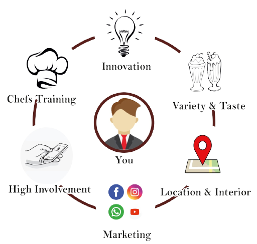
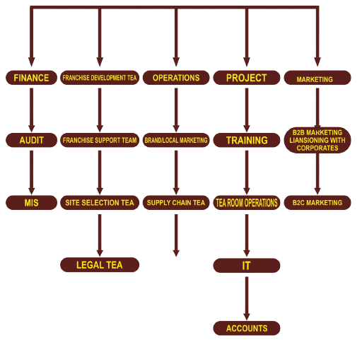
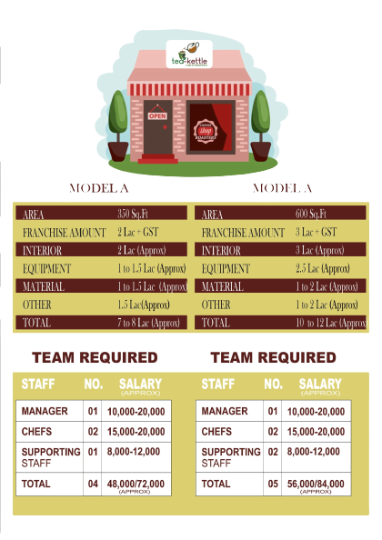

Why should an invester buy Tea Kettle's franchise
Brand “Tea-Kettle” The Quality ; Association
The name “Tea-Kettle” is to reckon with the best in the fraternity. It has created a
name for itself as well as has established itself in the top league of health Tea
room in Indore. Therefore we feel somebody intending to make a mark for
themselves by bringing in the brand Tea-Kettle to other parts of the Nation and
other cities of India will rate social importance brand consciousness high on
parameter
Increasing interest in the Tea room concept
There is proven formula of doing the business and which such a brand, the
franchisee does not invest on building the business from scratch
The company will provide exhaustive support in terms of outlet
designing and product (F&B) development, operational training so as to
provide a 360 degree support to the franchisee.
Training
Partnering with The Tea-Kettle will not only give access to the franchisee to
its experience but also it will be provided sgnificant training on Tea room
operations, supply chain, customer, satisfaction, man power, training, etc.
Attractive ROIs
The business will be able to registeraverage ROIs of 55-60% which is
considered very attractive in the franchise terms and conditions.
Support structure offered to the Franchisee
Marketing Support & guidance
Franchise Fee
Staff & Chef's Training
Tea and other critical raw material
Preparation Process
Join a growing and dynamic partner-benefit from our experience
World class Marketing
- Strategic brand marketing planning for brand launch, and
sustained growth
- Tactical marketing activity advice to drive sales.
- Food photography library and menu design support.
- On going consumer research advice and questionnaire design.
- Tosted consumer promotions and new product support materials
Operational Learning System
- 3 Week opening supprt team in your market for first outlet opening.
- Operations procedure manuals updated annually.
- Ideal product and equipment specifications.
- site selection advice, Tea room design and ideal floor plans.
- Staff recruitment support-job descriptions and rostering.
Supply Chain Networking
- Approved supplier listing for all key food ingredients and
equipment.
- Active sourcing of new local supplies for approval.
- On-going Research and development of innovative new products.
With us You don’t have to worry about

FRANCHISOR SUPPORT
Pre-Opening
- Site selectioin and premise development
- Architectural design and layout support
- Locations to be pre approved by the franchisor
- Assistance in Opening Initial and Ongoing Training
- Pre Opening and Opening support
- Invectory Material and supplies
- Senior employee of the company will be stations for 2 weeks to establish the area franchise business in
India
- Interviewing and selection of Manpower required at the
franchisee end
On-going operational support :
- Ongoing operational assistance
- Regular visit from the company representative
- 24/7 staff support availability
- Operating manuals & continuous updation with the
prevailing best practices
- Invectory supplies of In-house products
- Vendor arrangement
Advertising & Marketing Support :
- Advertising, marketing and the complete brand building
exercise
- Promotional materials-brochures, menu, point of sale
material
- Design of artwork of all the marketing communication.
THE TEA-KETTLE MANAGEMENT

Franchise Investment

Franchise Process
- If agreed kindly transfer token amount as a tokan of confirmation of your
interest in the brant “Tea-Kettle”.
- Once token amount get credited into the company’s account you will
recive the acknowledgment from the brand and a hard copy will also be
sent to you through courier.
The token amount which you will deposit will be further adjusted
at the time of signing the agriment.
- Once location approved by the team then pay the remaining franchise
fee.
- Kindly send the dimension of shop in Autocade file with complete video
and picture of the approved shop.
- Once we receive the dimension, our interior team will deliver complete
store plan with in 5 working days.
- Kindly transfer equipment and material amount 10 days before
inaugration.
- Apply for firm registration/muncipal corporation licence/labour
license/food licence/ppl and etc. other licence detail will be provided by
our legal team.
- Internet connection required to install POS.
- Franchise will take care of Food & Accomodation for the staff by the
company.